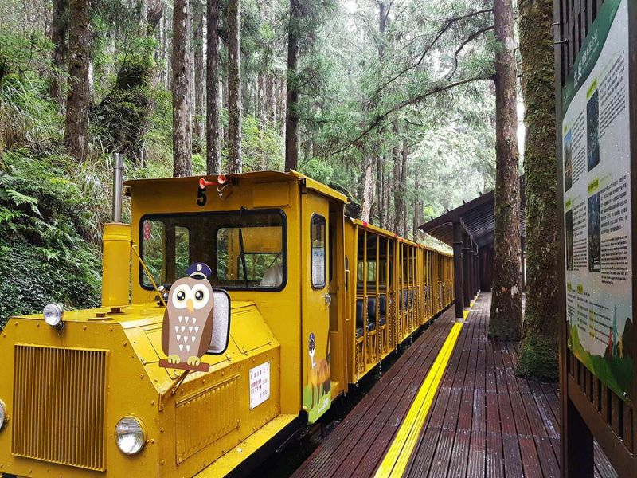

太平山蹦蹦車
Taipingshan Bong-Bong Train
地址：宜蘭縣大同鄉太平巷58之1號
太平山的蹦蹦車，昔日主要用於載運原木，其真正的名稱是"山地運材軌道車"。太平山運材軌道共鋪設16線，總長度達一百多公里，其中茂興線是太平山山地軌道橋樑最多、最具運材軌道代表性的路段，從太平山出發，沿線有太平山站、萬石(現稱茂興)、曙、壽、吉野等5個車站，長度約20.9公里，於1937 年開始林木生產，1979 年停運。
蹦蹦車創造了台灣現代的觀光台車文化，也保留過去林業生產機具文化，搭乘蹦蹦車開放式車廂的台車，沒有窗戶隔離，遊客在乘車過程中，穿梭樹林、鐵橋，自由呼吸森芬多精，擁抱大自然的氣息，是來太平山最獨特的遊憩體驗。
更多介紹：